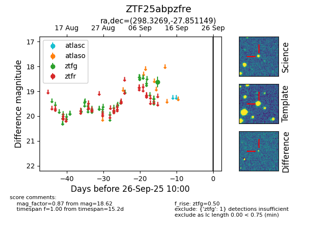

FINK: ZTF25abpzfre
Lasair: ZTF25abpzfre
ALeRCE: ZTF25abpzfre
ZTF25abpzfre (ztf,fink)
equatorial (ra, dec) = (298.3269,-27.85115)
galactic (l, b) = (13.0444,-25.01671)

last ztfg=18.62
1 ztfg detections